Soru 1Cevap: D
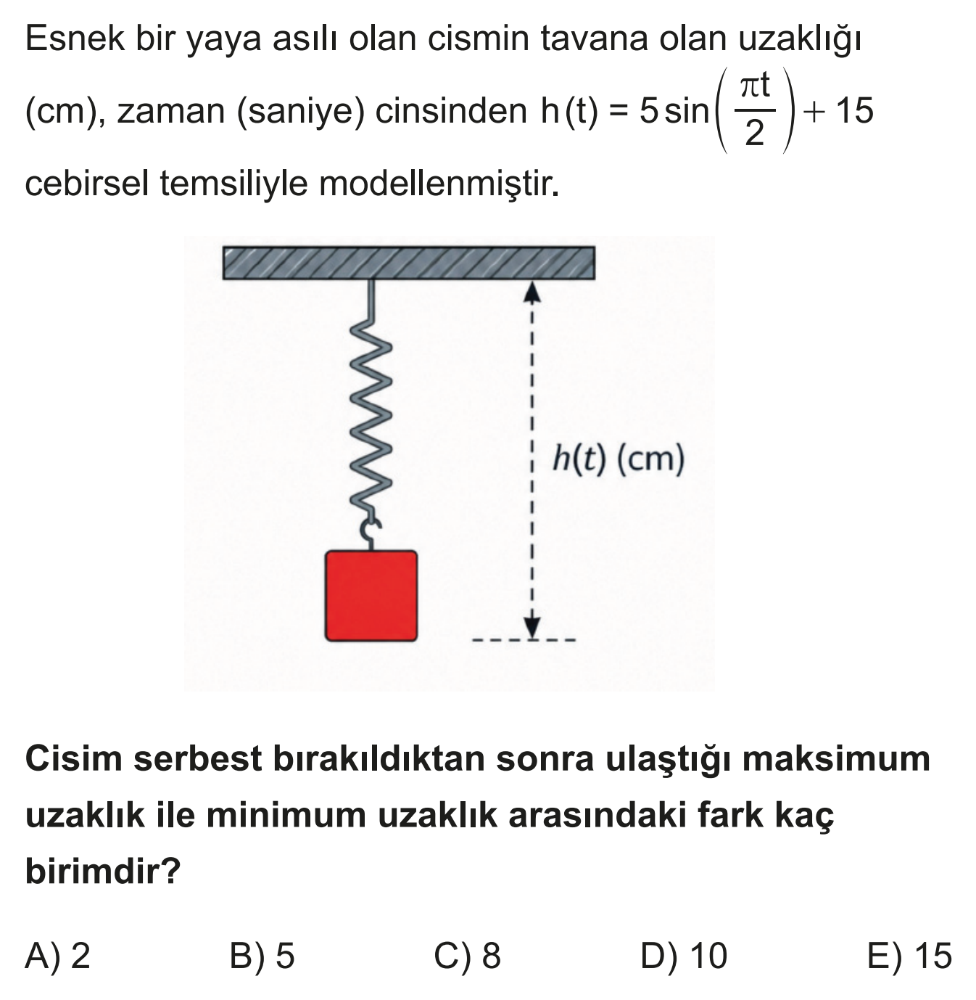
Çözüm
- $-1 \le \sin\frac{\pi t}{2} \le 1$.
- $10 \le h(t) \le 20$.
- Fark $20 - 10 = 10$ cm.
Cevap: D
Soru 2Cevap: B
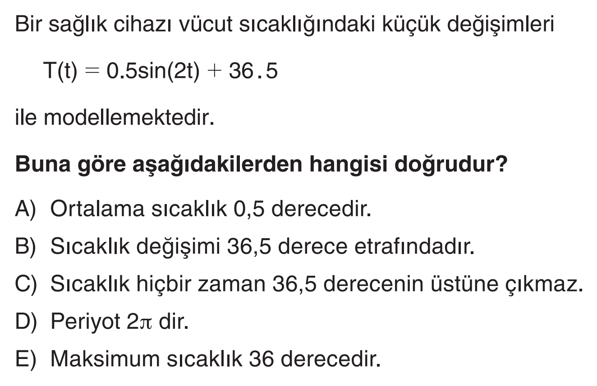
Çözüm
- $T(t) = 0{,}5\sin(2t) + 36{,}5$: orta değer $36{,}5$.
- $36 \le T \le 37$; periyot $\pi$.
- Sıcaklık $36{,}5$ derece etrafında değişir → B.
Cevap: B
Soru 3Cevap: D
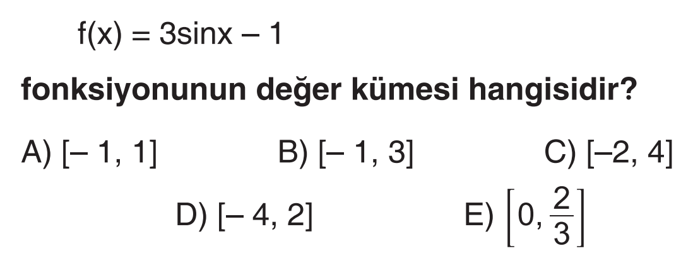
Çözüm
- $-1 \le \sin x \le 1$ → $-3 \le 3\sin x \le 3$.
- 1 çıkarılır: $-4 \le f(x) \le 2$.
- Değer kümesi $[-4, 2]$.
Cevap: D
Soru 4Cevap: C
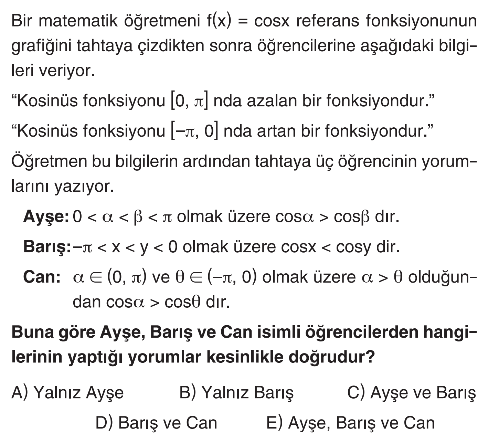
Çözüm
- Ayşe: $\cos$ $[0,\pi]$'de azalan → $\alpha < \beta$ ise $\cos\alpha > \cos\beta$ ✓.
- Barış: $\cos$ $[-\pi,0]$'da artan → $x < y$ ise $\cos x < \cos y$ ✓.
- Can: farklı aralıklardaki açılar karşılaştırılamaz (ör. $\alpha = \frac{5\pi}{6}$, $\theta = -\frac{\pi}{6}$ için $\cos\alpha < \cos\theta$) ✗.
Cevap: C
Soru 5Cevap: A
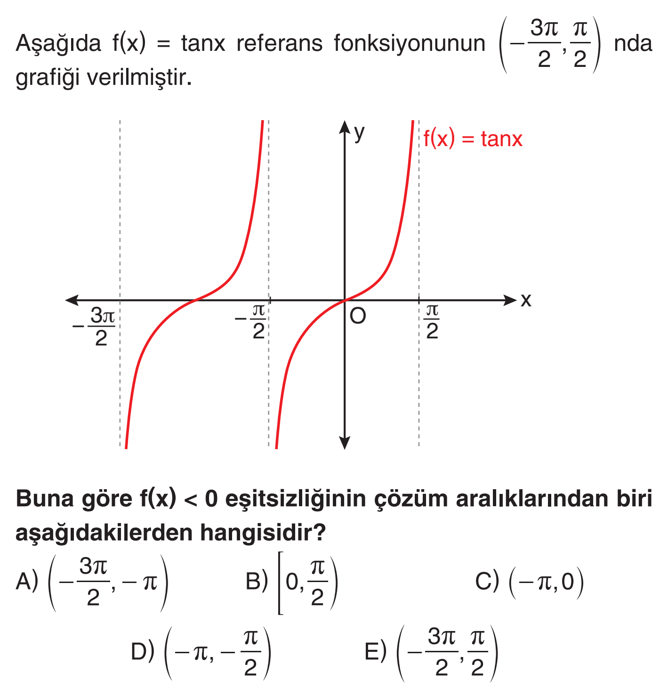
Çözüm
- $\tan x < 0$ ⇔ grafik x ekseninin altında.
- Aralıkta grafiğin altta olduğu yerler: $\left(-\frac{3\pi}{2}, -\pi\right)$ ve $\left(-\frac{\pi}{2}, 0\right)$.
- Seçeneklerde $\left(-\frac{3\pi}{2}, -\pi\right)$ var.
Cevap: A
Soru 6Cevap: C
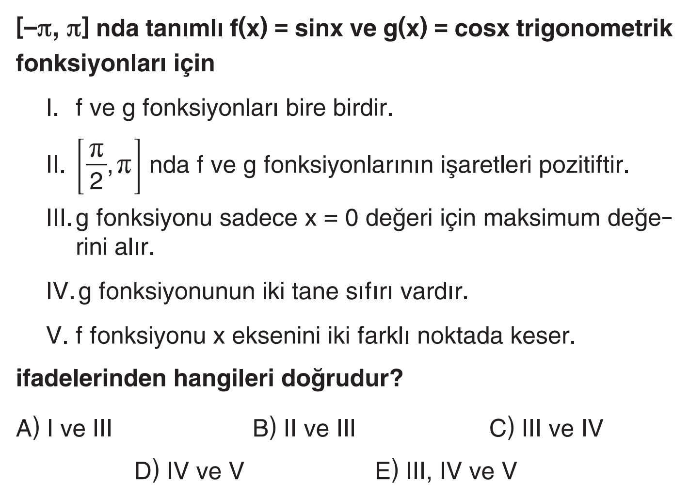
Çözüm
- I: $[-\pi,\pi]$'de sin ve cos aynı değeri birden çok kez alır → bire bir değil ✗.
- II: $\left[\frac{\pi}{2},\pi\right]$'de $\cos x \le 0$ ✗. III: $\cos x = 1$ yalnız $x = 0$'da ✓.
- IV: $\cos$'un sıfırları $\pm\frac{\pi}{2}$ ✓. V: $\sin$'in sıfırları $-\pi, 0, \pi$ (üç tane) ✗. III ve IV.
Cevap: C
Soru 7Cevap: E
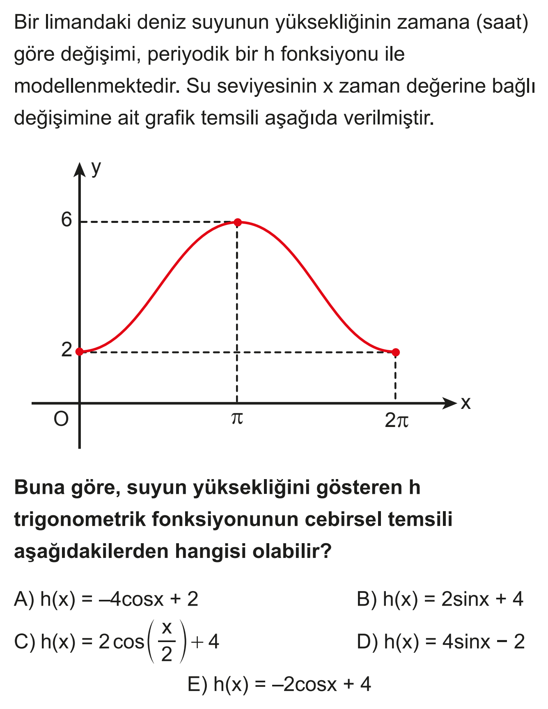
Çözüm
- Maksimum 6, minimum 2 → orta değer 4, genlik 2.
- $x = 0$'da minimum, $x = \pi$'de maksimum; periyot $2\pi$ → $-\cos x$ tipinde.
- $h(x) = -2\cos x + 4$.
Cevap: E
Soru 8Cevap: D
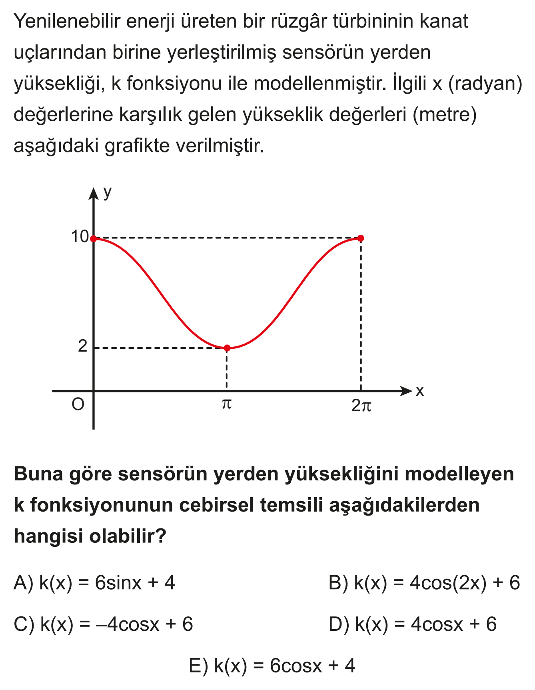
Çözüm
- Maksimum 10, minimum 2 → orta değer 6, genlik 4.
- $x = 0$'da maksimum (10) → $\cos x$ tipinde; periyot $2\pi$.
- $k(x) = 4\cos x + 6$.
Cevap: D
Soru 9Cevap: A
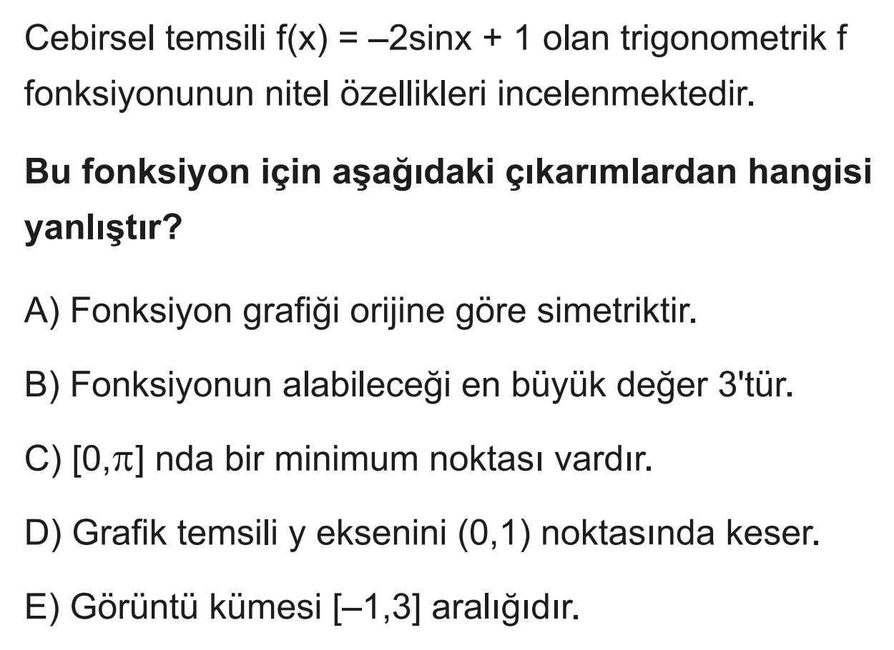
Çözüm
- $f(-x) = 2\sin x + 1$; bu $-f(x) = 2\sin x - 1$'e eşit değil → orijine göre simetrik değil (A yanlış).
- $-1 \le \sin x \le 1$ → $-1 \le f(x) \le 3$ (B, E doğru); $f(0) = 1$ (D doğru).
- $x = \frac{\pi}{2}$'de minimum $-1$ (C doğru). Yanlış olan A.
Cevap: A
Soru 10Cevap: D
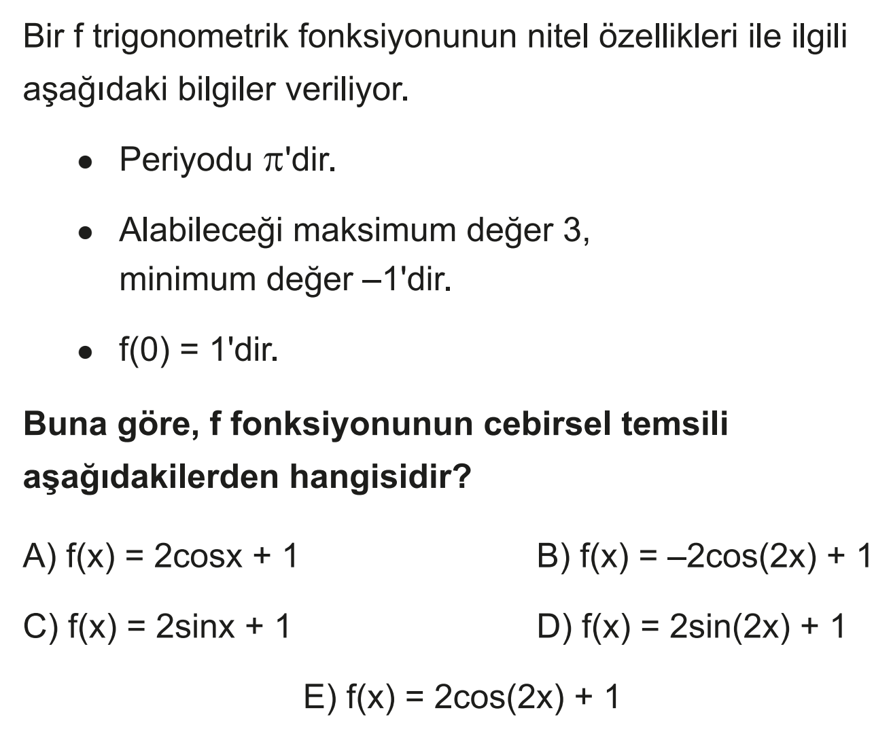
Çözüm
- Maksimum 3, minimum $-1$ → genlik 2, orta değer 1.
- Periyot $\pi$ → $x$ katsayısı 2.
- $f(0) = 1$ (orta değer) → sinüs: $f(x) = 2\sin2x + 1$.
Cevap: D
Soru 11Cevap: B
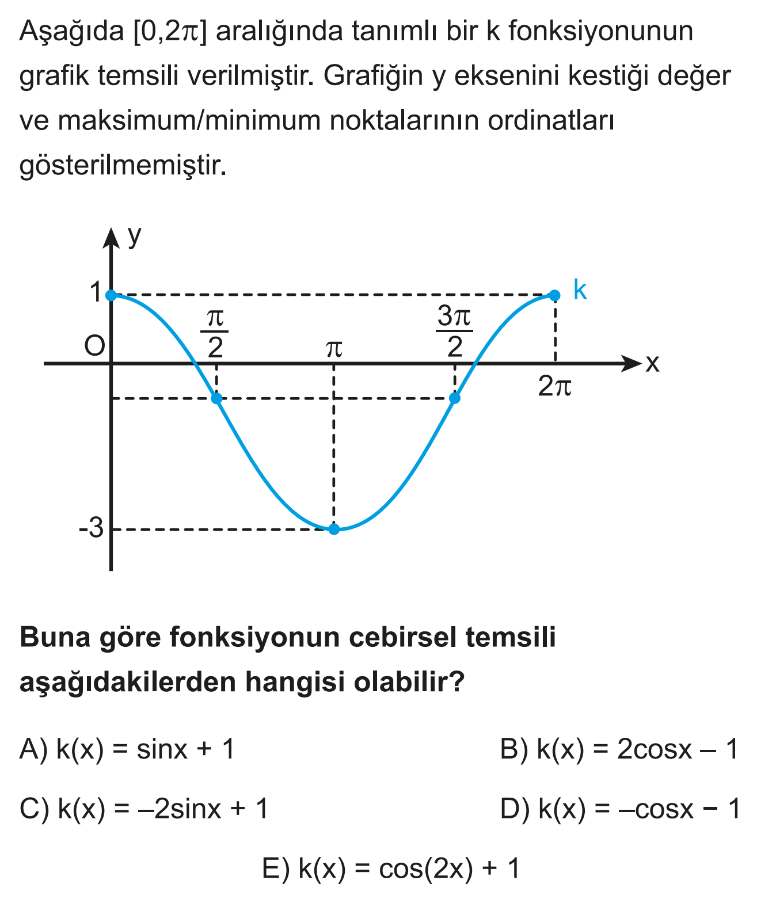
Çözüm
- $k(0) = 1$ maksimum, $k(\pi) = -3$ minimum → cos tipinde.
- Genlik $\frac{1-(-3)}{2} = 2$, orta değer $-1$.
- $k(x) = 2\cos x - 1$.
Cevap: B
Soru 12Cevap: A
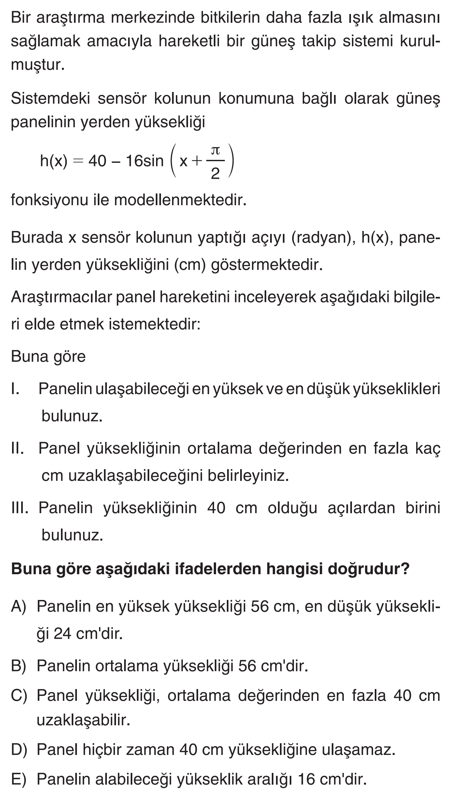
Çözüm
- $\sin\left(x + \frac{\pi}{2}\right) = \cos x$ → $h(x) = 40 - 16\cos x$.
- $-1 \le \cos x \le 1$ → $24 \le h(x) \le 56$.
- En yüksek 56 cm, en düşük 24 cm → A doğru.
Cevap: A
Soru 13Cevap: C
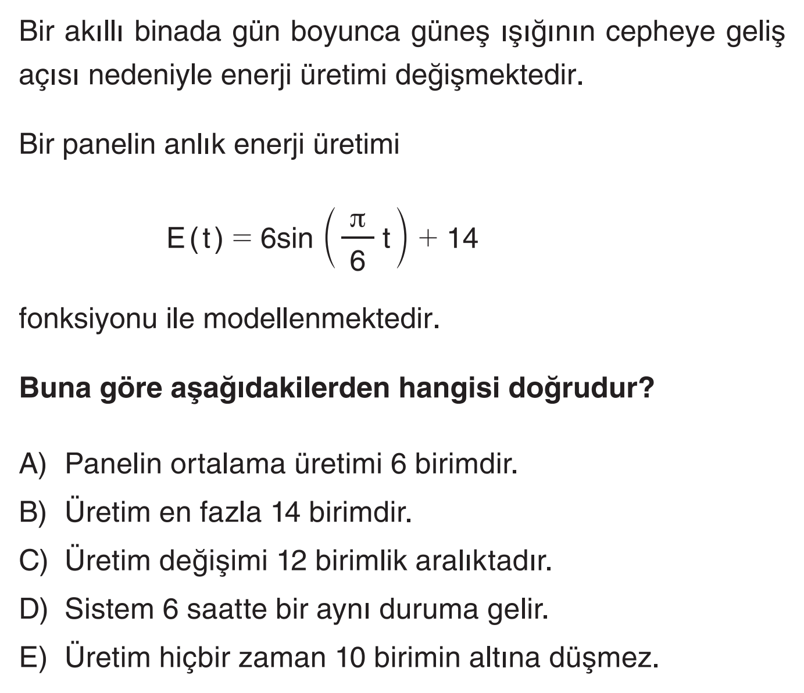
Çözüm
- $-6 \le 6\sin\left(\frac{\pi t}{6}\right) \le 6$ → $8 \le E(t) \le 20$.
- Ortalama 14, en fazla 20, en az 8; periyot $\frac{2\pi}{\pi/6} = 12$ saat.
- Değişim aralığı $20 - 8 = 12$ birim → C doğru.
Cevap: C
Soru 14Cevap: C
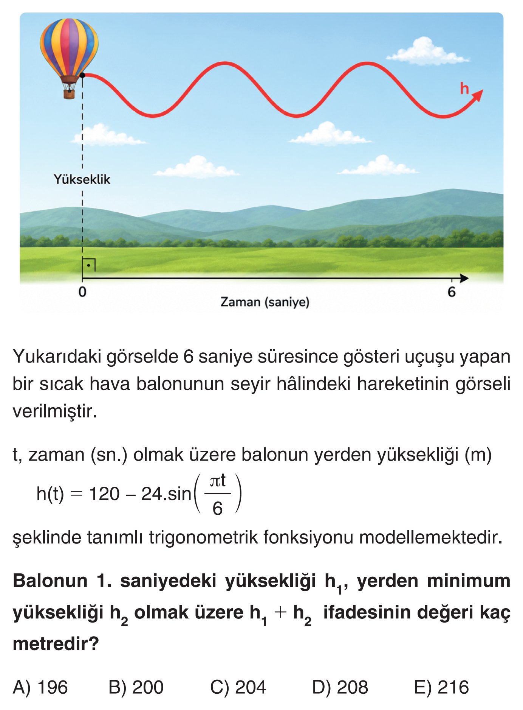
Çözüm
- $h_1 = h(1) = 120 - 24\sin\frac{\pi}{6} = 120 - 12 = 108$.
- En küçük yükseklik $\sin = 1$ iken: $h_2 = 120 - 24 = 96$.
- $h_1 + h_2 = 204$.
Cevap: C
Soru 15Cevap: B
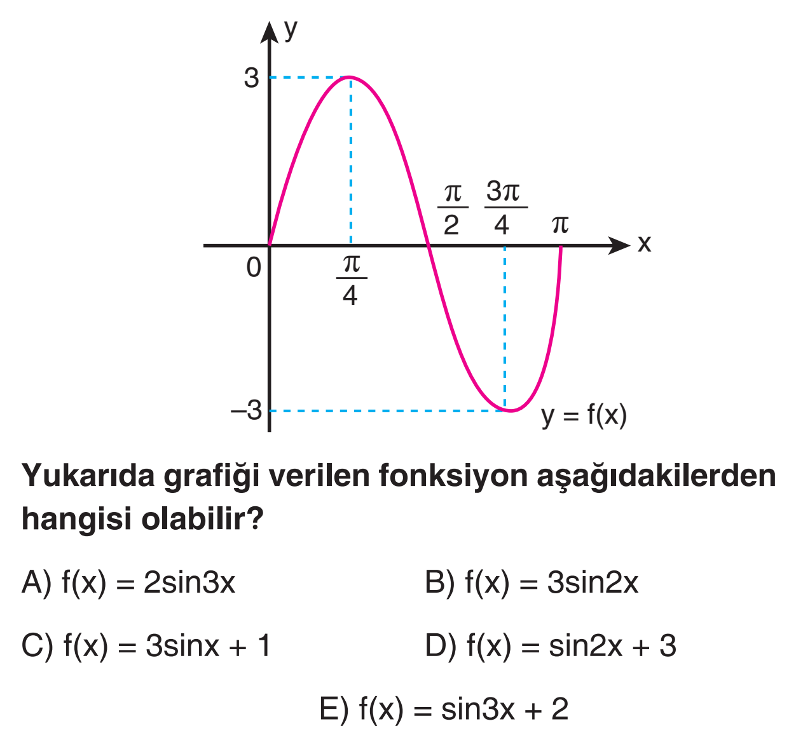
Çözüm
- Maksimum 3, minimum $-3$ → genlik 3, orta değer 0.
- $\frac{\pi}{4}$'te tepe, $\frac{3\pi}{4}$'te çukur → periyot $\pi$ → katsayı 2.
- $f(0) = 0$: $f(x) = 3\sin2x$.
Cevap: B
Soru 16Cevap: E
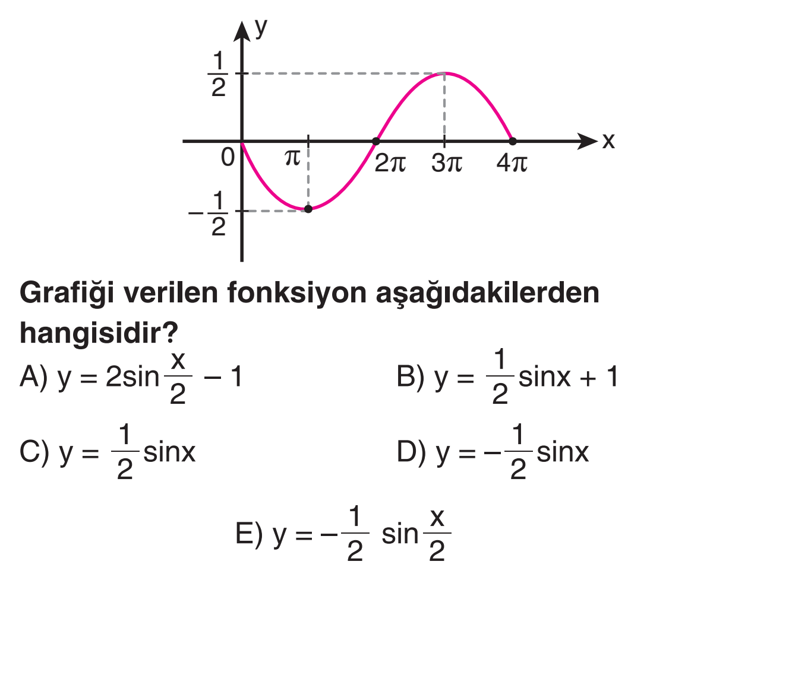
Çözüm
- Genlik $\frac12$, orta değer 0; periyot $4\pi$ → $x$ katsayısı $\frac12$.
- $x = 0$'dan sonra önce aşağı iner → $-\frac12\sin\frac{x}{2}$.
- Kontrol: $x = \pi$'de $-\frac12\sin\frac{\pi}{2} = -\frac12$ ✓.
Cevap: E
Soru 17Cevap: A
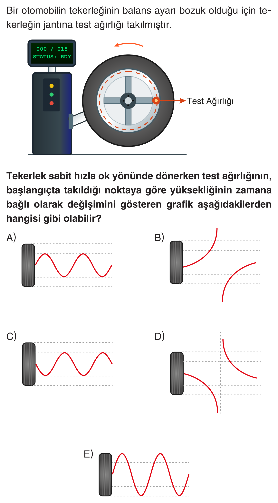
Çözüm
- Ağırlık başlangıçta merkezle aynı yükseklikte; tekerlek saat yönünün tersine döner.
- Yükseklik farkı $r\sin(\omega t)$: önce artar, en üste çıkar, iner, en alta iner…
- Başlangıç düzeyinden yukarı doğru başlayan sinüs eğrisi: A.
Cevap: A
Soru 18Cevap: C
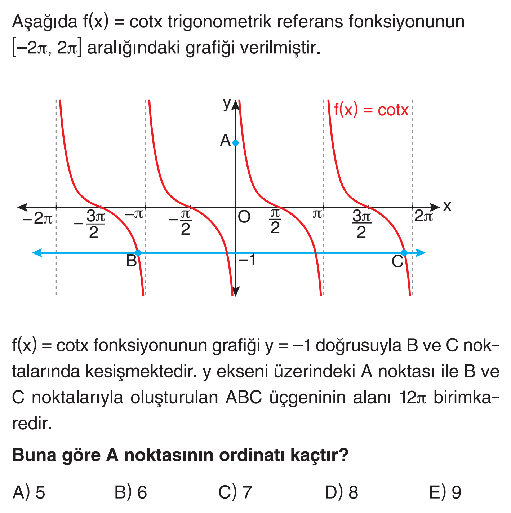
Çözüm
- $\cot x = -1$: B'de $x = -\frac{5\pi}{4}$, C'de $x = \frac{7\pi}{4}$ → $|BC| = 3\pi$.
- A'nın ordinatı $a$ ise üçgenin yüksekliği $a - (-1) = a + 1$.
- $\frac{3\pi(a+1)}{2} = 12\pi$ → $a + 1 = 8$ → $a = 7$.
Cevap: C
Soru 19Cevap: A
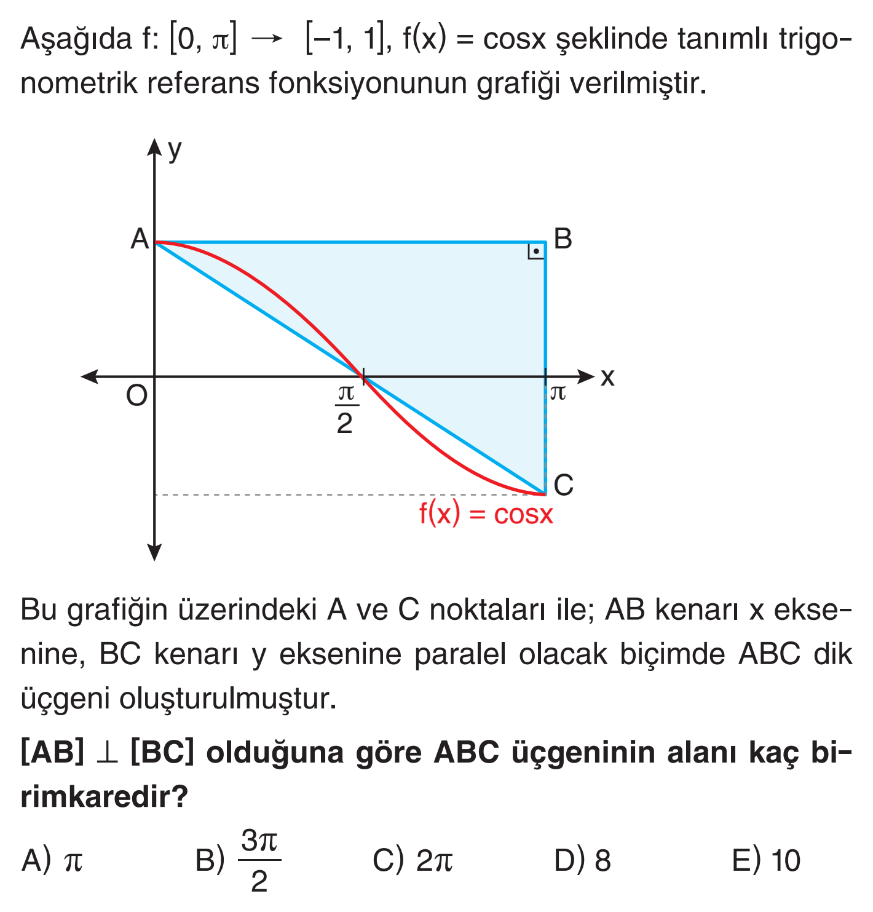
Çözüm
- $A(0, \cos0) = (0,1)$, $C(\pi, \cos\pi) = (\pi,-1)$, B$(\pi, 1)$.
- Dik kenarlar $|AB| = \pi$, $|BC| = 2$.
- Alan $\frac{\pi\cdot2}{2} = \pi$.
Cevap: A
Soru 20Cevap: B
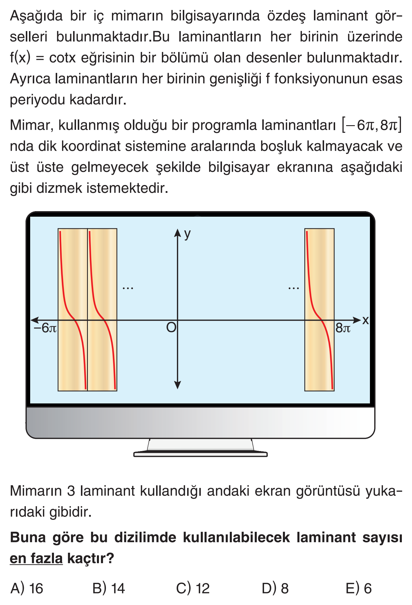
Çözüm
- $\cot x$'in esas periyodu $\pi$ → her laminant $\pi$ genişliğinde.
- Aralığın uzunluğu $8\pi - (-6\pi) = 14\pi$.
- En fazla $\frac{14\pi}{\pi} = 14$ laminant.
Cevap: B